Plot.plot({
grid: true,
marks: [
Plot.ruleY([0]),
Plot.ruleX([0]),
Plot.dot(spring_data, {x: "质量", y: "拉伸", symbol: "circle", fill: "currentColor"}),
Plot.line([[0, 0], [550, 8.9375]], {stroke: "green"}),
Plot.dot([[200, 3.25], [300, 4.875]], {fill: "red"}),
Plot.text(["e = 0.01625m"], {x: 250, y: 3, fontSize: 16, fontWeight: "bold"})
]
})\(斜率 = \frac{4.875-3.25}{300-200} = 0.01625\)
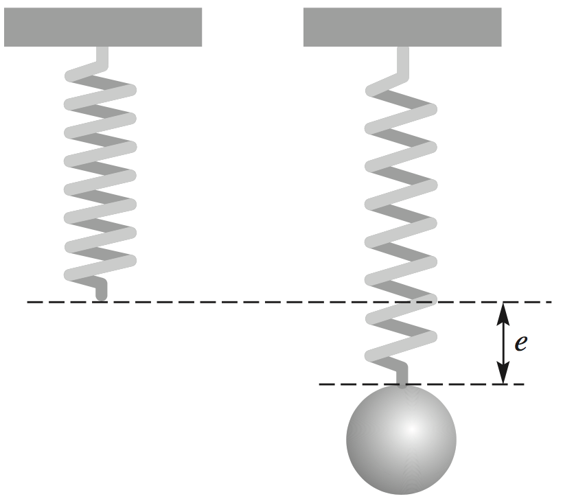
对于数列\(A = {a_0, a_1, a_2, a_3, \cdots}\), 其一阶差分定义为:
\[ \Delta a_0 = a_1 - a_0 \\ \Delta a_1 = a_2 - a_1 \\ \Delta a_2 = a_3 - a_2 \\ \Delta a_3 = a_4 - a_3 \\ \cdots \\ \Delta a_n = a_{n+1} - a_n \]
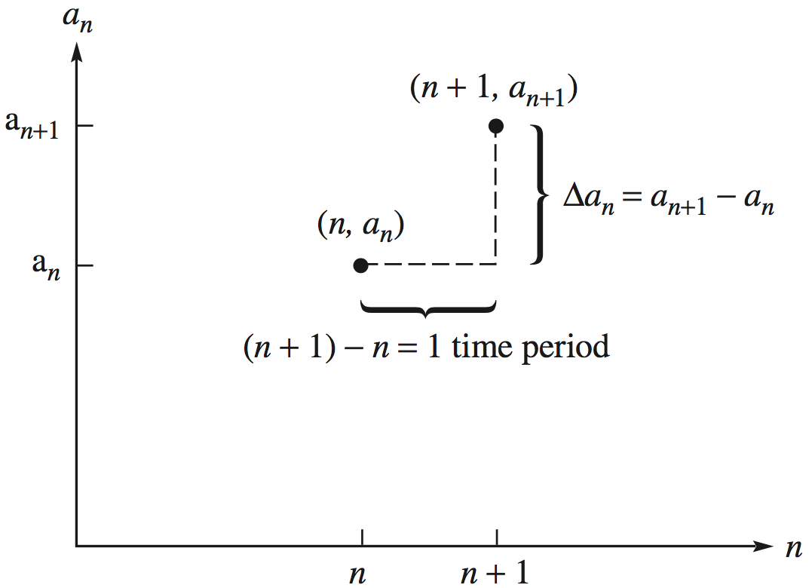
考虑本金1000美元, 月利息1%的储蓄问题: \(A = (1000, 1010, 1020.10, 1030.30, ...)\).
\[ \Delta a_0 = a_1 - a_0 = 1010.0 - 1000.0 = 10.0 \\ \Delta a_1 = a_2 - a_1 = 1020.1 - 1010.0 = 10.1 \\ \Delta a_2 = a_3 - a_2 = 1030.3 - 1020.1 = 10.2 \\ \cdots \\ \Delta a_n = a_{n+1} - a_n = 0.01a_n \\ \]
\[ a_{n+1} = a_n + 0.01a_n = 1.01a_n, n = 0, 1, 2, 3 \\ a_0 = 1000 \]
如果每月取出50美元\(\cdots\)
\[\Delta a_n = a_{n+1} - a_n = 0.01a_n - 50\]
在多数情况下, 很难象上述例子那样精确表述, 因此我们通过如下步骤找出变化:
Important
变化 = \(\Delta a_n\) = 某个函数\(f\)
对于离散情况:
变化 = \(\Delta a_n\) = \(a_{n+1} - a_n\) = \(f\)(序列中的项, 外部项)
六年前按揭20年买了一套80000美元的房子, 月供880.87美元并付每月1%的利息. 问现在还欠银行多少?
\[\Delta b_n = b_{n+1} - b_n = 0.01b_n - 880.87\]
求解下列方程即可:
\[ \begin{align*} b_{n+1} &= 1.01b_n - 880.87 \\ b_0 &= 80000 \end{align*} \]
\[B = (80000, 79919.13, 79837.45, \cdots)\]
\[\Delta p_n = p_{n+1} - p_n = k(665 - p_n)p_n\]
\[k \approx 0.00082\] \[p_{n+1} = p_n + 0.00082(665 - p_n)p_n\]
\[p_{n+1} = p_n + 0.00082(665 - p_n)p_n\]
思考
如何为书上例2传染病传播模型加入其它因素?
| n | 0 | 1 | 2 | 3 | 4 | 5 | 6 | 7 | 8 |
|---|---|---|---|---|---|---|---|---|---|
| \(a_n\) | 0.5 | 0.345 | 0.238 | 0.164 | 0.113 | 0.078 | 0.054 | 0.037 | 0.026 |
| \(\Delta a_n\) | -0.155 | -0.107 | -0.074 | -0.051 | -0.035 | -0.024 | -0.017 | -0.011 |
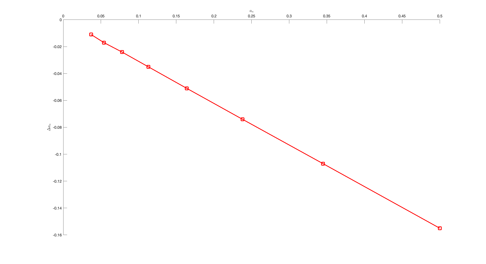
\[ \Delta a_n = -0.31a_n \\ a_{n+1} - a_n = -0.31a_n \\ a_{n+1} = 0.69a_n \]
存款问题: \(a_{n+1} = 1.01a_n, a_0 = 1000\)
\[ \begin{align*} a_1 &= 1010.0 = 1.01(1000)\\ a_2 &= 1020.1 = 1.01(1010) = 1.01^2 (1000)\\ a_3 &= 1030.3 = 1.01(1020.1) = 1.01^3 (1000)\\ a_4 &= 1040.6 = 1.01(1030.3) = 1.01^4 (1000) \end{align*} \]
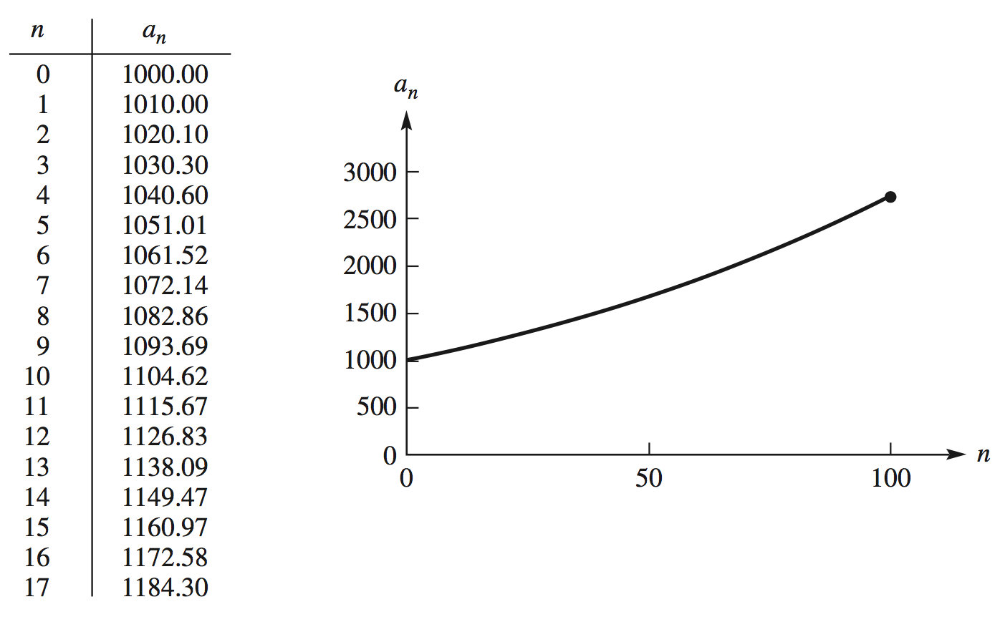
猜测: \(a_k = 1.01^k(1000)\) 验证、结论: …
猜测法的一般步骤
推论： 形式为\(a_{n+1} = ra_n\)的动态系统的解为\(a_k = r^k a_0\).
\(r = ?\)
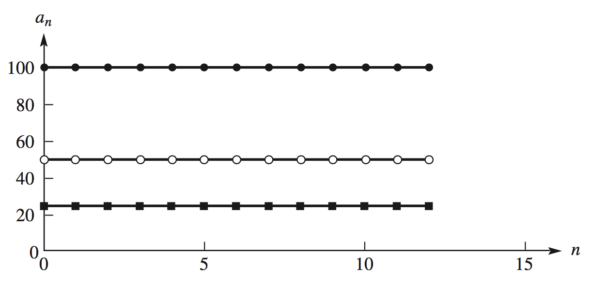 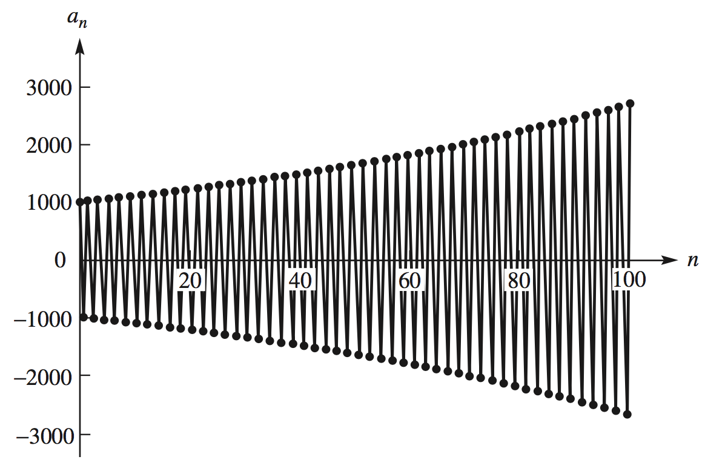
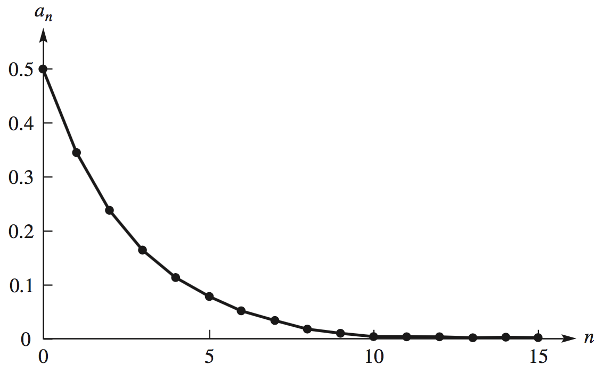 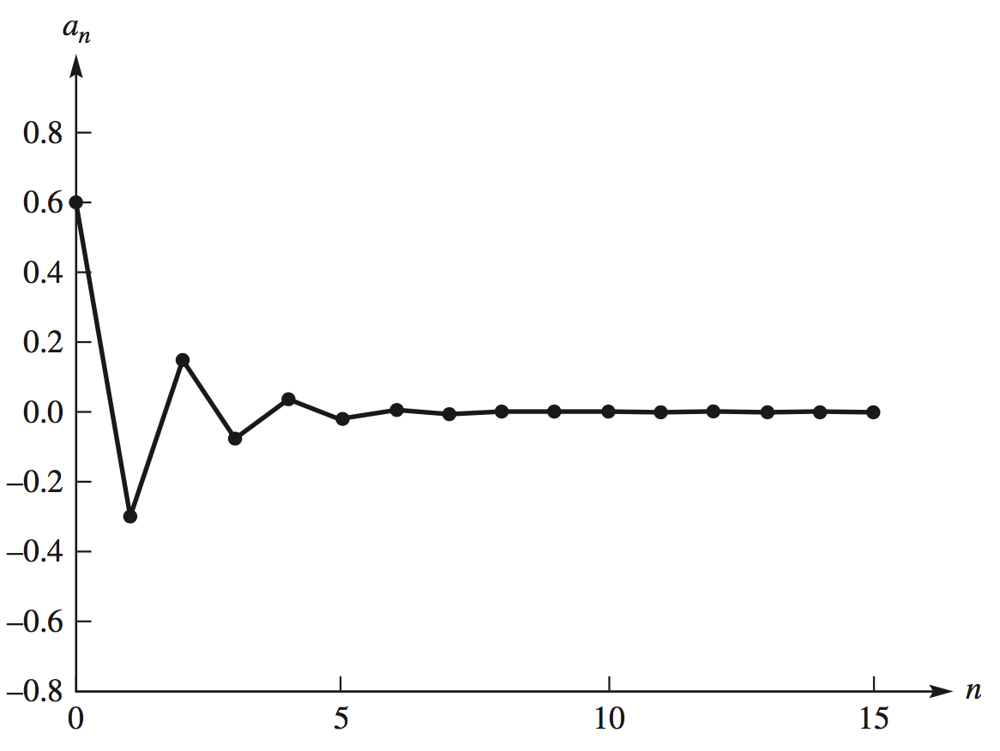
Digoxin浓度变化
\[a_{n+1} = 1.01a_n -1000\]
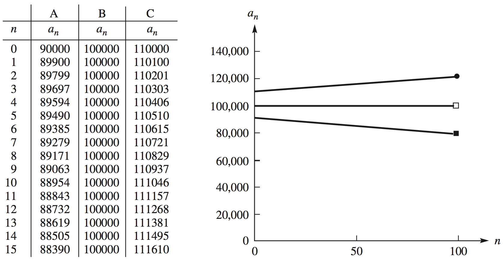投资
\[a_{n+1} = a_n -300\]
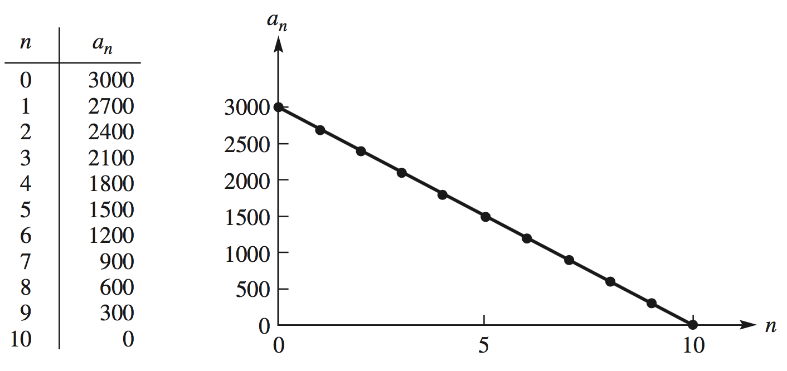\(a_{n+1} = ra_n + b, r \neq 1\)的不动点为：
\[a = \frac{b}{1-r}\]
上述动态系统的解为： \(a_k=r^kc+\frac{b}{1-r}\).
思考
\(r\)的值不同时，长期来说系统如何变化？
研究系统的长期变化，看系统对如下条件是否敏感：
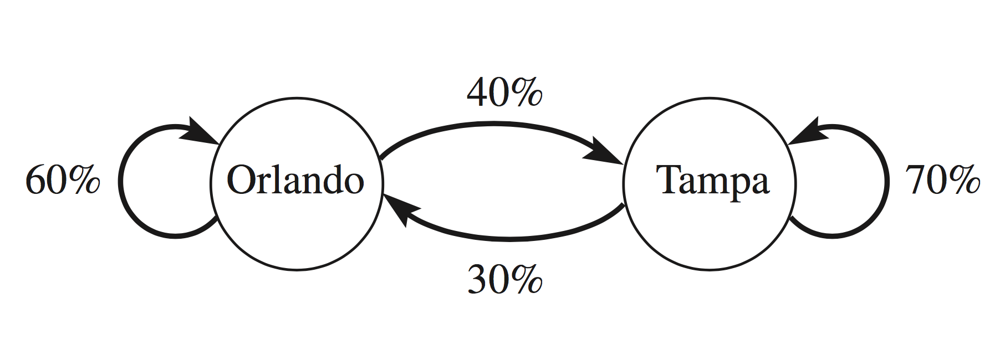
\[ \begin{align*} O_{n+1} &=0.6O_n + 0.3T_n \\ T_{n+1} &=0.4O_n + 0.7T_n \end{align*} \]
如果存在平衡点\(O\), \(T\): \[O=O_{n+1}=O_n\] \[T=T_{n+1}=T_n\] 推导出： \[O=0.6O + 0.3T\] \[T=0.4O + 0.7T\]
\(O=\frac{3}{4}T\)满足上述方程组. 如果公司有7000辆车，则\((O, T) = (3000, 4000)\)处开始，保持不变。
分析下述四种初始条件：
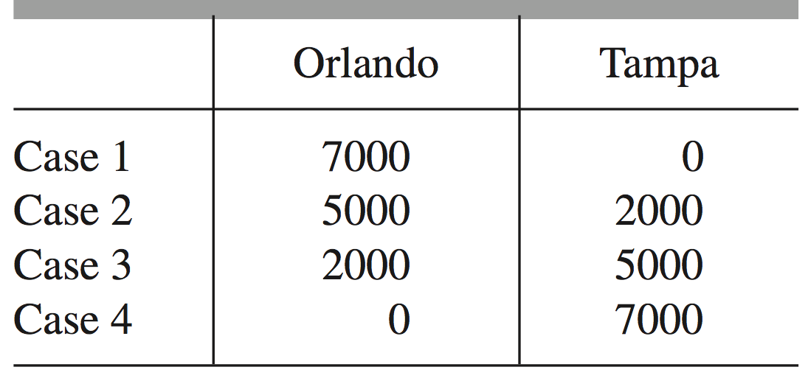四种情形中每一种情形在一周内都是和平衡点\((3000,4000)\)很接近的，甚至在其中一个城市没有车的情况也是如此。结果显示，平衡点是稳定的而且对初始值不敏感的。
思考:该系统是否对\(O_{n+1}\)和\(T_{n+1}\)的系数敏感？
法西联军33艘战舰，英军27艘战舰，在一次遭遇战中每方的战舰损失都是对方战舰的\(10\%\)。
动力系统模型 令\(n\)表示战斗过程中遭遇战的阶段并定义：
战斗结束：英军全面战败，剩3艘战舰其中一艘严重损坏，法军大约还有18艘战舰。
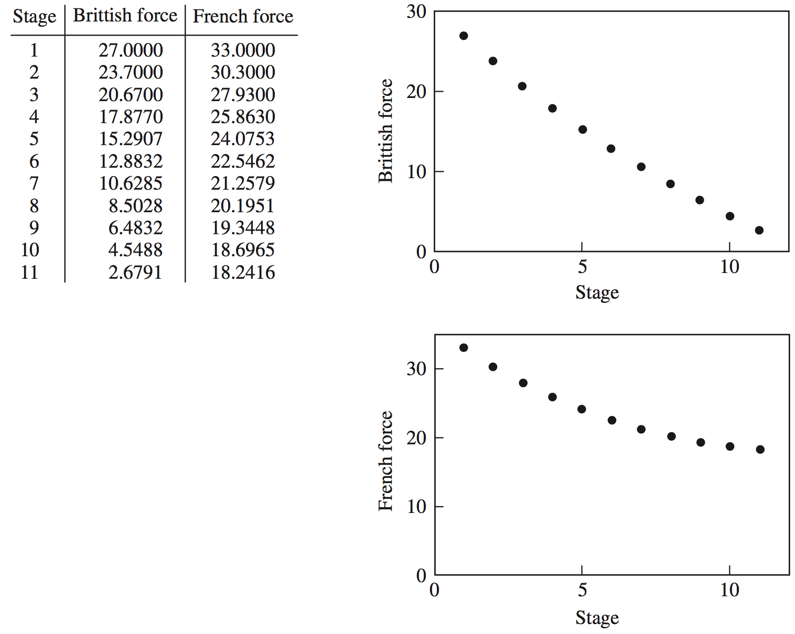策略：英军13艘攻击\(A\)；然后，全力攻击\(B\)，最后攻击\(C\)。
英军大获全胜。现实世界：法西联军没有参加战斗C，而是把剩下的约13艘战舰撤回法国。
如果\((O,H)\)为平衡点则\(O_{n+1}=O_n=O\), \(H_{n+1}=H_n=H\)：
两个平衡点: \((0, 0)\), \((150, 200)\). 为什么？
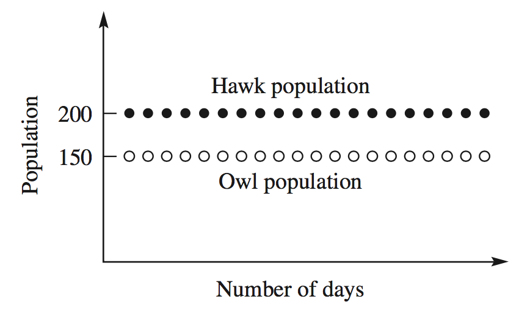 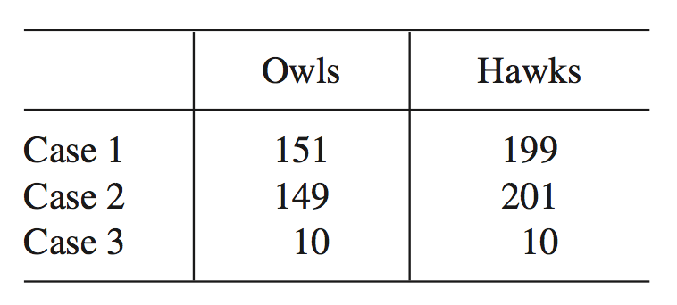
如果在栖息地安置350只猫头鹰和隼：
\[ S_{n+1}=0.75S_n+0.20U_n+0.40A_n \\ U_{n+1}=0.05S_n+0.60U_n+0.20A_n \\ A_{n+1}=0.20S_n+0.20U_n+0.40A_n \]
平衡点: \(S_{n+1}=S_n=S\), \(U_{n+1}=U_n=U\), \(A_{n+1}=A_n=A\):
\[ -0.25S+0.20U+0.40A=0 \\ 0.05S-0.40U+0.20A=0 \\ 0.20S+0.20U-0.60A=0 \]
\(S:U:A = 2.2221:0.7777694:1\)
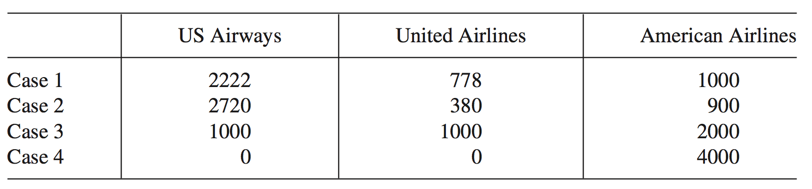
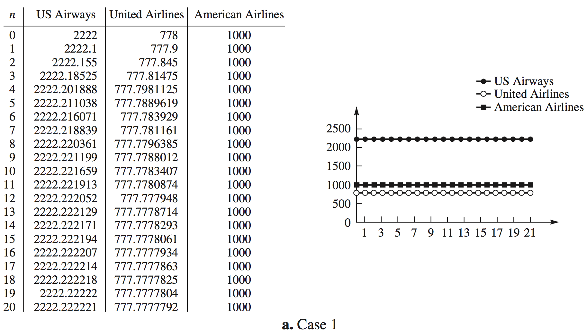
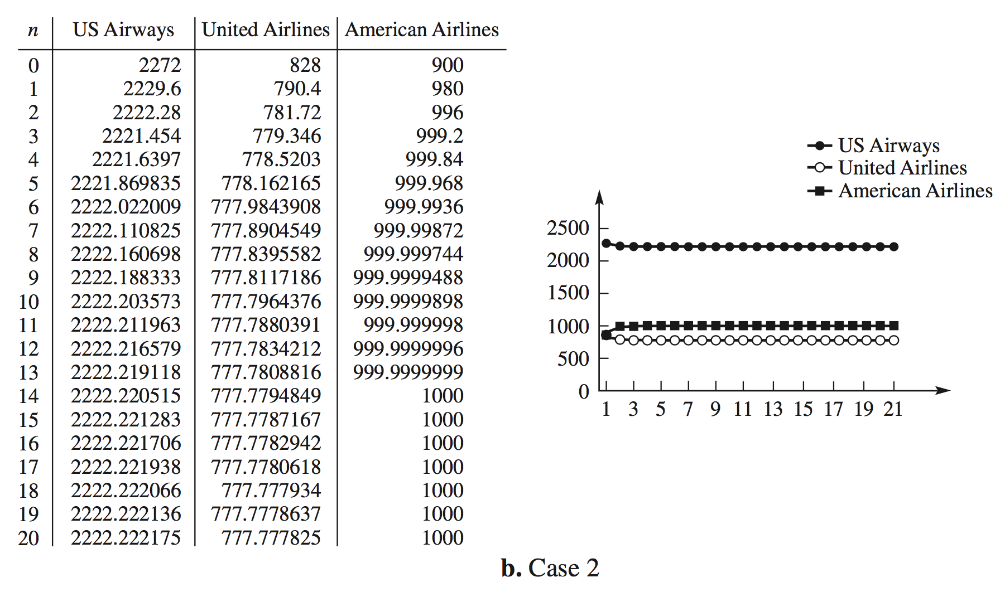
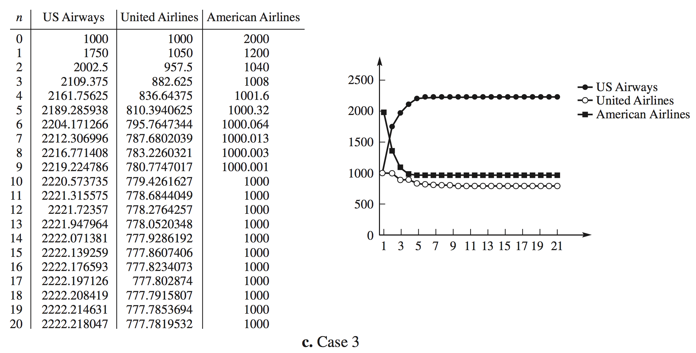
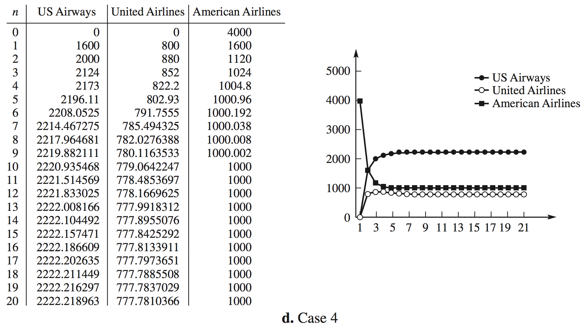
系统相当稳定，即使刚开始没有人坐US Airways和United Airlines的旅客数.